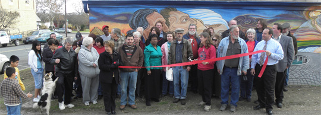

Advocacy Outreach
200 Depot Street,
P. O. Box 169, Elgin,
Texas 78621
Phone 512 281-4180
FAX 512 281-9599
Tom Besson~ artist

ELGIN COURIER – ELGIN, TEXAS – WEDNESDAY, DECEMBER 16, 2009 – PAGE 11
Advocacy Outreach brings public art to Elgin
Advocacy Outreach, Elgin’s social services non-profit organization, in a coordinated effort with local artist Tom Besson and the City of Elgin, will present the city with another piece of public art, entitled, “Immigrant Nation” at a reception Dec. 17 at 5 p.m. at Advocacy Outreach, 200 Depot Street.
The completed outdoor mural is at the back of the Advocacy Outreach building.
Advocacy Outreach has provided educational opportunities and other vital services to the community for the last 17 years. In the 1990’s the summer art program executed Elgin’s first piece of public art since the WPA commissioned the mural in the Post Office. They felt it was time to give another esoteric gift to the community and offered a 24’ x 8’ wall to local artist Tom Besson that reflects the demographics of the community.
Besson felt that Elgin, being a minority/majority community, would be well represented by a piece that reflected the ethnic diversity and immigrant contributions of the town. Working with the Board of Directors of Advocacy Outreach and the City of Elgin, Besson submitted s design accomplishing that. In these tough economic times the City of Elgin was only able to find enough money to partially fund the material costs of this project.
Besson proceeded with the project without reimbursement for his labor, instead donating it ans an in kind of donation to Advocacy Outreach. It is a gift to the city and to the non-profit that finds itself in the same economic situation as so many organizations of its kind today.